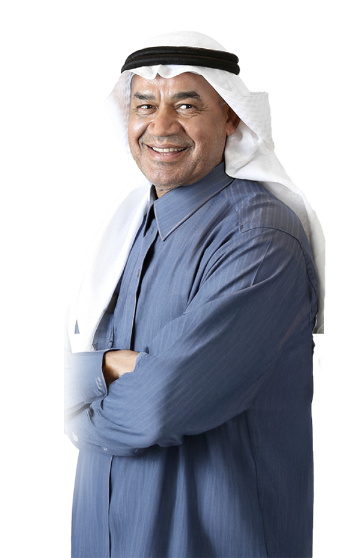
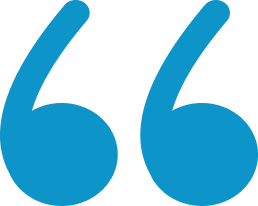

2025
التقرير السنوي


شكّل عام 2025 عامًا مفصليًا في مسيرة تطور شركة جاز العربية للخدمات. فقد كان عامًا حققت فيه الشركة نموًا منضبطًا، وعزّزت أسسها التشغيلية والمالية، وأتمّت بنجاح انتقالها إلى السوق الرئيسية في تداول (السوق المالية السعودية) — وهو إنجاز يعكس حجم الشركة ونضجها ومعايير الحوكمة التي وصلت إليها جاز عبر أكثر من ثلاثة عقود من التشغيل.
وفي ظل استمرار الاستثمارات في البنية التحتية للطاقة والغاز والقطاع الصناعي في المملكة العربية السعودية، أثبتت جاز قدرتها على تحويل فرص السوق إلى نتائج ملموسة. فقد قمنا بتوسيع حجم الأعمال المتعاقد عليها، وأحرزنا تقدمًا في مشاريع الهندسة والتوريد والإنشاء ومشاريع خطوط الأنابيب المرتبطة بمبادرات جديدة لتوليد الطاقة والغاز بصورة مستقلة، كما واصلنا تعميق دورنا ضمن الشبكة الوطنية للغاز في المملكة. وقد استندت هذه الإنجازات إلى الانضباط التشغيلي، وقوة علاقاتنا مع العملاء، وتركيز استراتيجي واضح.
يواصل قطاع الطاقة في المملكة العربية السعودية تطوّره، مع تزايد التركيز على الغاز، وموثوقية البنية التحتية، والتوطين، ودعم الأصول على امتداد دورة حياتها. وتتمتع شركة جاز بموقع قوي ضمن هذا المشهد. إذ يتيح نموذج التشغيل المتكامل الذي تتبناه الشركة والذي يشمل الخدمات الفنية، والتجارة، والتصنيع تقديم خدمات شاملة للعملاء عبر كامل دورة حياة المشاريع والأصول، بدءًا من أعمال الهندسة والتوريد والإنشاء والخدمات الميدانية، وصولًا إلى التصنيع داخل المملكة، والمعايرة، وخدمات ما بعد البيع.
وخلال العام، واصلت الشركة الفوز بتنفيذ مهام معقدة في قطاعات النفط والغاز، والبتروكيماويات، والطاقة، والمياه وتحلية المياه، والإسمنت، والصلب، والتعدين. وتظل قدرتنا على الجمع بين تقنيات كبرى الشركات العالمية المصنعة للمعدات الأصلية وبين القدرات الهندسية والتصنيعية المحلية عامل تميّز رئيسيًا، يمكّن عملاءنا من تعزيز موثوقية الأصول، وتقليل فترات التوقف، وتحقيق مستهدفات التوطين.
تظل جودة التنفيذ محورًا أساسيًا في القيمة التي تقدمها جاز. فقد حافظت الشركة على معايير عالية في تسليم المشاريع، والسلامة، والضوابط التشغيلية. وترتكز أنشطتنا على أنظمة إدارة معتمدة، وثقافة راسخة للصحة والسلامة والبيئة، إلى جانب تنامٍ متزايد في الاهتمام بالأمن السيبراني والمرونة التشغيلية.
وتواصل فرق مواقع المشاريع، وفرق الخدمات، وحوكمة المشاريع المنضبطة دعم التنفيذ المتسق عبر محفظة متنامية من المشاريع والخدمات. وتُعد هذه القدرات بالغة الأهمية في القطاعات التي نخدمها، حيث تمثل الموثوقية والسلامة متطلبات لا تقبل التهاون، ويشكّل بناء الثقة طويلة الأجل الأساس لعلاقاتنا مع العملاء.
لا يعد التوطين بالنسبة لشركة جاز العربية للخدمات التزاماً مفروضاً فحسب؛ بل هو ميزة استراتيجية. وقد واصلنا الاستثمار في تطوير الكفاءات الوطنية، عبر بناء قدرات فنية وقيادية من خلال مسارات تدريب داخلية، إلى جانب منظومة المشروعات المشتركة الآخذة في التوسع. وتُسهم هذه الشراكات مع مزودي التقنية العالميين في نقل المعرفة والتصنيع المحلي وتطوير قدرات الخدمات طويلة الأجل داخل المملكة.
ويظل كوادرنا الأساس الذي يقوم عليه نجاحنا. ومع توسع عملياتنا، نمينا قوام القوى العاملة بما يتوافق مع متطلبات المشاريع، مع الحفاظ على تركيز راسخ على السلامة وتطوير القدرات والسلوك المهني والأخلاقي. ويعزز هذا الالتزام نمواً مستداماً، ويضمن جاهزية جاز لمواكبة الارتفاع المتواصل في تعقيد متطلبات العملاء.
عكس الأداء المالي لشركة جاز خلال عام 2025 انضباطًا عاليًا في التنفيذ وإدارة حصيفة لرأس المال. واصلنا التركيز على جودة الأرباح، وتوليد التدفقات النقدية، وتعزيز متانة المركز المالي، بما يمكّن الشركة من دعم النمو مع الحفاظ على مرونة مالية كافية. ويؤكد إعلان توزيع أرباح مرحلية خلال العام التزام مجلس الإدارة بنهج متوازن في تخصيص رأس المال وتعزيز عوائد المساهمين.
ويمثل الانتقال الناجح إلى السوق الرئيسية (تاسي) محطة مفصلية مهمة لشركة جاز ومساهميها، إذ يسهم في تعزيز حضور الشركة في السوق، وتوسيع قاعدة المستثمرين، وترسيخ التزامها بالشفافية، والحوكمة، وخلق القيمة طويلة الأجل.
تُعد الحوكمة القوية ركيزة أساسية للأداء المستدام. ويواصل مجلس الإدارة المساهمة بدور فاعل في الإشراف على الاستراتيجية، وإدارة المخاطر، والتواصل مع أصحاب المصلحة، بما يضمن التزام شركة جاز بالمتطلبات التنظيمية وأفضل الممارسات المتوقعة من الشركات المدرجة في السوق الرئيسية. ونؤكد التزامنا بالمسؤولية، والرقابة الفعالة، والتواصل الشفاف مع جميع أصحاب المصلحة.
وبالنظر إلى المرحلة المقبلة، يظل مجلس الإدارة واثقًا من التوجه الاستراتيجي لشركة جاز. فمع نمو حجم الأعمال المتعاقد عليها، وتعميق علاقاتنا مع العملاء، وتوسّع قدراتنا المحلية، واعتماد هيكل مالي متحفظ، تتمتع جاز بموقع قوي يمكّنها من مواصلة تحقيق نتائج موثوقة للعملاء، وخلق قيمة مستدامة للمساهمين.
وبالنيابة عن مجلس الإدارة، أتقدم بالشكر إلى مساهمينا على ثقتهم المستمرة، وإلى عملائنا وشركائنا على ثقتهم وتعاونهم، وإلى موظفينا على تفانيهم واحترافيتهم. ومعًا، سنواصل بناء شركة جاز العربية للخدمات كشريك موثوق ومسؤول داخل المملكة، يسهم في دعم طموحات المملكة في مجالي الطاقة والصناعة.
وتفضلوا بقبول فائق الاحترام والتقدير،